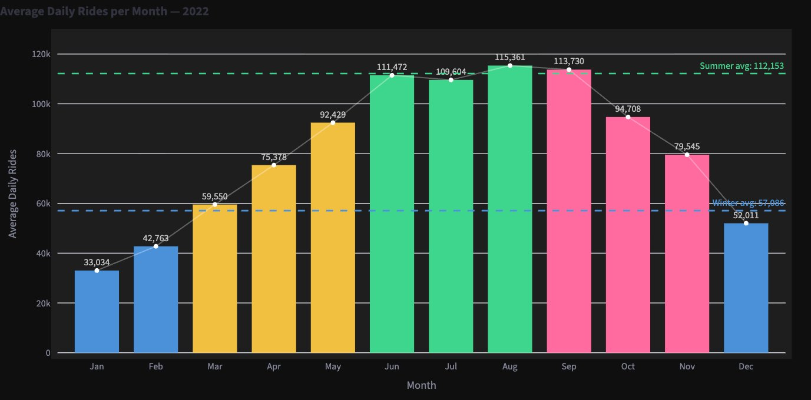
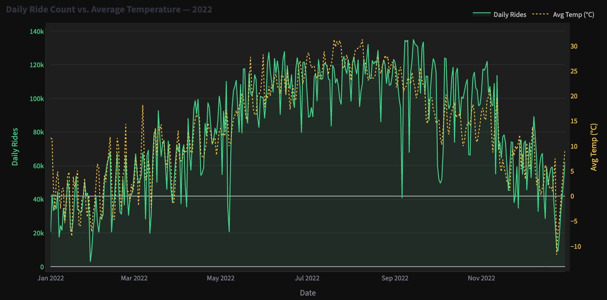
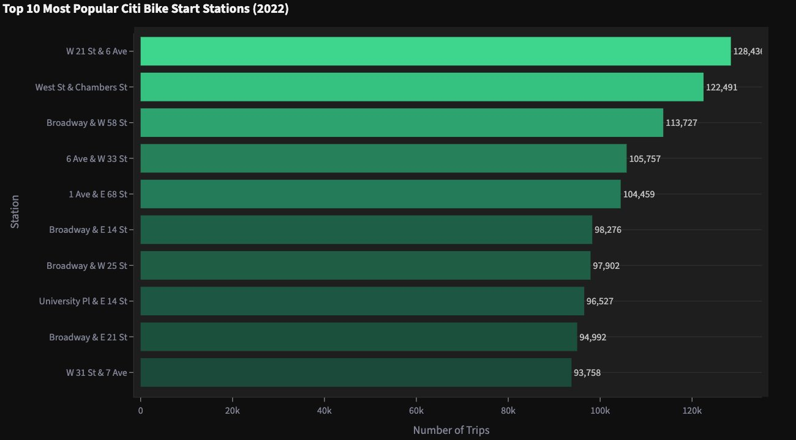

NYC Citi Bike Dashboard (2022)
Python · Pandas · Plotly · Streamlit · Zeitreihen · Kepler.glProjektübersicht
Dieses Projekt analysiert Citi Bike-Nutzungsmuster in New York City im Jahr 2022, um operative Entscheidungen rund um Fahrradverfügbarkeit, Rebalancing und saisonale Bedarfsplanung zu unterstützen.
Problemstellung
Die Nachfrage nach Citi Bikes schwankt je nach Standort, Tageszeit und Jahreszeit. Ziel war es, nachfragestarke Stationen zu identifizieren, saisonale Nutzungsmuster zu verstehen und operative Anpassungsempfehlungen abzuleiten.
Datengrundlage
Der Datensatz umfasst Citi Bike-Fahrtdaten für 2022 sowie Wetterdaten für saisonale Vergleiche. Die Analyse wurde mit Python (Pandas, NumPy) durchgeführt, Visualisierungen als interaktives Streamlit-Dashboard aufbereitet.
Zentrale Erkenntnisse
- Die Nachfrage konzentriert sich stark auf Stationen in Mittel-Manhattan
- Die Fahrtenanzahl steigt in wärmeren Monaten deutlich und fällt im Winter stark ab
- Spitzenzeiten sind an vorhersehbare Pendelzeiten geknüpft
- Die Winternachfrage liegt bei etwa der Hälfte der Sommernachfrage
1) Saisonalität treibt die Nachfrage

2) Temperatur beeinflusst die Nutzung stark

3) Nachfragestarke Stationen konzentrieren sich in Manhattan

Empfehlungen
- Rebalancing-Häufigkeit an nachfragestarken Manhattan-Stationen erhöhen
- Personal und Betrieb saisonal skalieren (Sommer vs. Winter)
- Gezielte Rebalancing-Zyklen am frühen Morgen und Mittag einführen
- Räumliche Hotspot-Daten für Expansionskorridore nutzen
Fazit
Diese Analyse zeigt, wie Zeitreihenmuster, räumliche Konzentration und Nachfrageverteilung die operative Effizienz in Mobilitätssystemen verbessern können. Durch die Ausrichtung von Angebotsentscheidungen an beobachteten Nachfragemustern kann Citi Bike Zuverlässigkeit verbessern und Ressourcen optimieren.